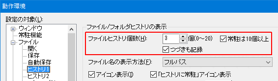
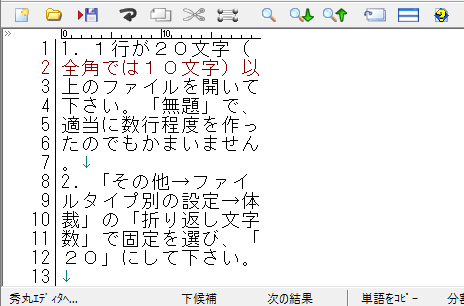
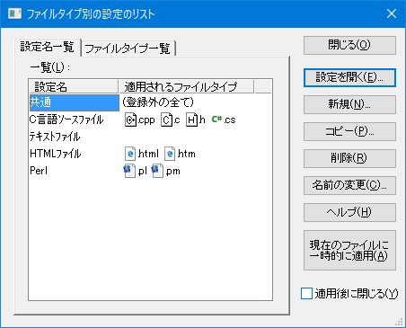
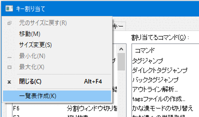

【０】ここに書いてあること
【１】カスタマイズ一覧
【２】画面まわり
【３】ユーザーインタフェース
【４】行の扱い
【５】拡張子別の設定
┣【５−１】Ver.8.90以降の場合
┗【５−２】Ver.8.90より前の場合
【６】キー操作
┣【６−１】キー割り当ての一覧表作成方法
┣【６−２】キー割り当て方法
┣【６−３】メニュー作成
┣【６−４】メニューをキーに割り当てる
┗【６−５】キー割り当ての保存と読み込み
【７】マクロ
【８】最後に
ここでは、秀丸エディタをインストールした後で特別な設定をしないまま使っていて、「いまいちしっくりこない」という方や「こんなことは出来ないのかな」とか思っている方を対象に、秀丸エディタをもっともっと使いやすくする方法(カスタマイズ)を説明します。
カスタマイズ以外にも便利な機能なども紹介していますので、自分はカスタマイズ方法を知っているのでいまさらそんな説明は不要だと思われている方も、最後まで目を通して頂けたらと思います。「おおっ、そんなことが出来るのか」と思うことがあるかもしれません。
秀丸エディタで設定出来る内容の一覧表（詳細な説明は、「秀丸エディタのヘルプ」を参照）です。
ここだけは押さえておいた方が良いと思うものと、一覧表以外のカスタマイズについては、別のところで順に説明しています。
動作環境を操作する場合は「上級者向け設定」をチェックしておいてください。

「その他→ファイルタイプ別の設定→フォント」
文字フォントやサイズなどを設定。
「その他→ファイルタイプ別の設定→体裁」
折り返し、行番号の計算方法、行間、文字間、自動インデント、タブの文字数などの設定。
「その他→ファイルタイプ別の設定→デザイン」
各種強調表示、複数行コメント、ルーラー、行番号、カーソル行、文字色の設定。
「その他→ファイルタイプ別の設定→その他」
かな漢字変換の制御、保存する時に不要なタブや空白を変換、EOF制御文字の扱い、エンコード、改行BOM、バックアップファイルの設定。
「その他→動作環境→ウィンドウ」
ツールバー表示、ファンクションキー表示、スクロールバー表示、タブモードなど、ウィンドウ関連を設定。
「その他→動作環境→表示/操作」
画面のスクロール方法、カーソル移動の加速、カーソル形状など、カーソル関連を設定。
「その他→動作環境→環境」
マクロファイル用、設定ファイル用のフォルダなど、パス関連を設定。
Windows Vista以降のOSでは、必ず書き込み可能なフォルダを指定してください。 (デフォルトで書き込み権限のあるユーザーフォルダ以下に設定されるので、通常は問題ない)

「その他→動作環境→パフォーマンス」
やり直しバッファサイズ、テンポラリファイルの利用方法など、編集時の制御関連を設定。
「その他→動作環境→ファイル」
ファイルを開く時のダイアログタイプ、ファイルのヒストリ個数、ファイルの自動保存方法、ファイルの排他制御方法などを設定。
「その他→動作環境→編集」
禁則処理の方法、禁則対象文字など、禁則処理を設定。
まずは、画面まわり（見た目）を自分好みに変えてみましょう。
適当なファイルを開いて下さい。「無題」で、適当に数行程度を作ったのでもかまいません。
「その他→ファイルタイプ別の設定→デザイン」場所の一覧にある各項目の「文字の色」などを好きな色に変えて下さい。（各項目を選択し、プロパティから変更してください）
「カーソル行」と「普通の文字」は、別の色にしておいた方がいいでしょう。
カーソル行には「下線」を付けることも出来ます。

「OK」を押してダイアログを閉じ、カーソルを上下に移動してみて下さい。
自分の気に入った設定になるまで２．〜３．を繰り返して下さい。
どうです。かなり見やすくなっていませんか？
これだけでもかまいませんが、マウスを使用する/しないで設定しておいた方がいい項目もあるので、そちらの設定もしてみましょう。
「その他→動作環境→ウィンドウ」にある、「ツールバー」、「縦スクロールバー」、「横スクロールバー」、「ファンクションキー表示」、「ステータスバー」、「タブモード」をお好みに応じてONにしたり、OFFにしたりして下さい。
意味が分からない場合は、とりあえず逆の設定（ONの時はOFF、OFFの時はON）にして下さい。
「詳細」ボタンがある場合は、その内容も確認してみてください。ステータスバーの場合は、全体の文字数や行数も表示できます。

「OK」を押してダイアログを閉じて下さい。
自分の気に入った設定になるまで1.〜2.を繰り返して下さい。
たったこれだけの設定でも、インストール時の設定と比べて使いやすくなったと思います。このように、秀丸エディタはユーザーごとにカスタマイズ出来るすばらしいエディタなのです。
秀丸エディタでのインタフェース（ユーザーとの間をとりもつ部分）と言えば、何といってもファイルを扱うことに尽きると思います。ここでは、そのインタフェースを変更したり、便利な機能を紹介します。
まずは、よく使う「ファイル→開く」のダイアログを自分好みに変えてみましょう。（１アクションで「開く」のダイアログを出す方法もありますので、「【６】キー操作」を参照して下さい）
「その他→動作環境→ファイル」の「「開く」のダイアログ」を適当なものに変えて下さい。

「OK」を押してダイアログを閉じて下さい。
「ファイル→開く」で、どのようなダイアログが出るか確認してみて下さい。
自分の気に入った設定になるまで1.〜3.を繰り返して下さい。
最近使ったファイルは、「ファイル→[1]」などで開くことが出来ますが、デフォルトの設定（3つ）では少なすぎて足りないという方や、ヒストリなんて不要だという方がいると思います。そういう時は、「0〜20」の範囲で自由に変えることが出来ます。
「その他→動作環境→ファイル→ヒストリ1」の「ファイルヒストリ個数」をお好みに応じて変えて下さい。

「OK」を押してダイアログを閉じて下さい。
11個以上にして、11個目以降をキーボードで選択したい場合は、[↑]か[↓]で選択するか、再度[0]を押すことで次の候補へ移動することが出来ます。
いつもよく使う拡張子が決まっている(例えば、「TXT」)ので、最初に「開く」のダイアログが出た時に「TXT」のファイルだけが表示されたら便利だと思ったことはありませんか？
複数の拡張子を指定したい場合(例えば「TXT」と「DOC」)は、「;」(半角のセミコロン)で区切って指定することが出来ます(例えば「*.TXT;*.DOC」)。
タスクトレイにある秀丸をクリックした時に出る「フォルダ」と同じものが「開く」のダイアログにあったら便利だと思ったことはありませんか。「開く」のダイアログで、[Alt]+[Space]を押せば、最近アクセスしたフォルダリストを出すことが出来ます。
これで、必要なファイルを容易に開くことが出来るようになったと思います。
文章を書く人にとって、行の扱い(改行が入ることで１行にするか、見た目で１行にする。1ページの行数を指定)というものは、非常に重要になってくると思いますが、今の設定で満足していますか？ここでは、行の扱いを変更したり、便利な機能を紹介します。
これ以降は、改行（※）が入ることで1行にすることを「エディタ行」、見た目で1行にすることを「ワープロ行」、行の開始から改行までを「1行」として説明します。
（※）編注：ここでの「改行」とは、見た目の折り返しのことではなく、画面上で"↓"と表示されている「改行記号」のことを指しています。
まずは、「エディタ行」と「ワープロ行」を理解するために、次の設定をして下さい。
1行が20文字（全角では10文字）以上のファイルを開いて下さい。「無題」で、適当に数行程度を作ったのでもかまいません。
「その他→ファイルタイプ別の設定→体裁」の「折り返し文字数」で固定を選び、「20」にして下さい。

「その他→ファイルタイプ別の設定→デザイン→表示2」にある、「行番号表示」をONにして下さい。（OFFのままでも、秀丸エディタウィンドウの右上に行番号が出ます）


「その他→ファイルタイプ別の設定→体裁→詳細」にある「行番号の計算方法」を「ワープロ的」にして下さい。
「OK」を押してダイアログを閉じて下さい。（これで、「ワープロ的」での行番号の計算方法が分かります）

同様に、「行番号の計算方法」を「エディタ的」にして「エディタ行」の行番号の計算方法も確認して下さい。

これで、「エディタ行」と「ワープロ行」が理解出来たと思いますので、自分にあった設定へ変更しておきましょう。
原稿などを書く時は、1ページはワープロ行で100行にしたいといったようなことがあると思いますが、そういう時は、「ページ番号表示」をありにしておくといいでしょう。
「その他→ファイルタイプ別の設定→デザイン→表示2」の「ページ番号表示」をONにして下さい。

「行数」を100にして下さい。
「OK」を押してダイアログを閉じて下さい。
ここまで読まれた方の中には、「おいおい、ちょっと待ってくれー。わしは原稿も書くし(例えば拡張子は「TXT」) プログラム(例えば拡張子は「C」)もするので、ファイルを開くたびにそんな設定をしないといけないのか？」と思う方もいると思いますが、ご安心を。拡張子ごとに個別の設定できるので、「【５】拡張子別の設定」を参照して下さい。
文章を編集中に人から声をかけられて編集作業を一時中断した後で、「あれっ、今まで何を編集したんだっけ？編集した行に移動出来れば思い出せるんだけどなー。」と思ったことはありませんか？そういう人のために、編集位置を検索するという機能がありますので、「●編集位置のマーク及び検索」を参照して下さい。
ここまでは、カスタマイズとは言えないくらいの簡単な設定です。これ以降に、カスタマイズの本領を発揮する部分が書かれています。
目的に応じて（例えば、「文章ファイル」「プログラムファイル」）設定を変更したいと思ったことはありませんか。秀丸エディタは、ファイルの拡張子によって、各種設定を切り替える事が出来ます。
1つの設定に、複数の拡張子を登録可能ですが、
も同じになるため、これらを拡張子毎別にしたい場合は、設定を別にする必要があります。
では、
として、それぞれの書式を設定してみましょう。
バージョンによって設定方法が異なります。
Ver.8.90以降の場合、「ファイルタイプ別の設定」ダイアログにある、「設定のリスト」を使用します。
「その他→ファイルタイプ別の設定」ダイアログを開きます。
「設定のリスト」ボタンを押すと、「ファイルタイプ別の設定のリスト」ダイアログが表示されます。
「設定名一覧」タブでは、設定の「新規作成」「コピー」「名前の変更」「削除」が出来ます。

「ファイルタイプ一覧」タブでは、「拡張子」と「設定」の割り当ておよび、割り当てを解除します。
「設定名」または「ファイルタイプ」を選び「設定を開く」ボタンを押すと、選んだ設定を変更できます。 (「ファイルタイプ別の設定」ダイアログが開く)
「設定名」または「ファイルタイプ」を選び「現在のファイルに一時的に適用」ボタンを押すと、選んだ設定を開いているファイルに一時的に適用することが出来ます。(「一時的な設定」になる)
「ファイルタイプ別の設定のリスト」ダイアログから、「ファイルタイプ一覧」タブを選択します。
ファイルタイプ一覧の中から、変更したいファイルタイプ(拡張子)を選び、「変更」ボタンを押すと、「ファイルタイプに設定名の割り当て」ダイアログが表示されます

「適用される設定名」の横にある「>」 をクリックすると、既存の設定一覧が表示されます。設定を変更し「OK」ボタンでダイアログを閉じると、選択した設定に切り替わります。
「ファイルタイプ別の設定のリスト」ダイアログから、「ファイルタイプ一覧」タブを選択します。
「追加」ボタンを押すと、ファイルタイプに登録されていない拡張子の関連付けを行う事が出来ます。追加する拡張子を入力し、設定名を選択します。

今回は「ファイルタイプ」に、“TXT” を入力し、「適用される設定名」に「ﾃｷｽﾄﾌｧｲﾙ」を指定します。
「新しい設定名を作る」にチェックを入れると、設定を新規に作ることも可能です。追加する拡張子を入力し、元にする設定名と新しく作る設定名を入力してください。
「ファイルタイプ」の「>」を押す事で、拡張子がない「grep結果」や「実行結果」の設定も行う事が出来ます。
「ファイルタイプ別の設定のリスト」ダイアログから、「設定名一覧」タブを選択します。
元にしたい設定があるなら選択して「コピー」ボタンを、なければ「新規」ボタンを押すとダイアログが表示されるので、新しい設定の名前を入力してください。 (どちらを選んでも、ダイアログのタイトルが異なるだけで中身は同じ。コピーだと選択してあった設定がデフォルトのコピー元になる)

設定を選び「設定を開く」ボタンを押すと、ファイルタイプ別の設定」ダイアログが開き、設定の変更も可能です。
拡張子との関連付けは行われていないので、「拡張子に関連付けられているファイルの設定を変更」を参考に、拡張子に関連付けてください。
適当な文章ファイル（拡張子が「TXT」のファイル）を開いて下さい。
（設定出来るのは、現在開いているファイルの拡張子です）
「その他→ファイルタイプ別の設定」ダイアログの「.TXTの設定」が「共通」になっていることを確認して下さい。
（デフォルトでは、すべての拡張子の設定が「共通」になっています）
「.TXTの設定」コンボボックスから「テキストファイル」を選んで下さい。
（これで、拡張子が「TXT」のファイルは個別の設定を利用することが出来るようになります）

（「設定のリスト」ボタンを押すことで、新たな設定の作成・既にある設定をコピー・設定の名前を変更が出来ます。既に「共通」の設定をカスタマイズしている場合は、「共通」の設定をコピーするといいでしょう）

Ver.8.88より、選択された「設定のリスト」に関連付けられた拡張子が、ダイアログ下部に表示されます。
必要に応じて各種設定を変更して下さい。
「OK」を押してダイアログを閉じて下さい。
（現在の文書のみを一時的に変更したい場合は、「保存しないで更新」ボタンを押して下さい）
同様に、プログラムファイル（拡張子が「C」）も設定して下さい。
試しに「文章ファイル(TXT)」「プログラムファイル(C)」「それ以外のファイル」を開いてみて下さい。先ほど設定した内容が反映されているはずです。
これで、目的に応じたファイルが作りやすくなったと思います。
秀丸エディタでは、単純に「ファイルタイプ別の設定」だけを編集できません。編集中の「ファイルの種類(拡張子)」と「ファイルタイプ別の設定」の関連づけも変更されてしまいます。
例えば「文章ファイル(TXT)」を開いている状態で、「HTMLファイル」の設定を変更したいので「ファイルタイプ別の設定」から「HTMLファイル」を選択し設定を変更した (「OK」を押してダイアログを閉じた)場合、
だったものが、
に変更されてしまいます。
「ファイルタイプ別の設定」を変更したい場合は、面倒でも関連づけされているファイルを開いてから、設定を変更してください。または、開いているファイルの「ファイルタイプ別の設定」覚えておき、最後に再設定するような動作が必要です。
エディタを使うのは初めてで、どのキーに何が割り当てられているかさっぱり分からないといったことはありませんか？
また、別のエディタから秀丸エディタに変更した場合など、キーの操作が以前のエディタと違っていたり、以前のエディタでは出来ていたのに秀丸エディタでは操作出来ない（分からない）といったことはありませんか？
ここでは、自分の好きなキー（マウスを含む）に必要な機能を割り当てる方法や、便利な機能を紹介します。
キーに必要な機能を割り当てるには、「キー割り当て」を行いますが、秀丸エディタのバージョンにより、「キー割り当て」のダイアログが異なります。
秀丸エディタ Ver.8.90以降の場合 (Ver.8.90〜)
現在割り当てているコマンドやキーが表示されるようになっています。また、コマンドの検索も可能で、「検索」コンボボックスに入力された内容を含むコマンド名を絞り込み可能です。ドロップダウンリストからは、コマンドの「分類」による絞り込みもできます。
「キー」に対して「コマンド」を割り当てる方法と、

「コマンド」に対して「キー」を割り当てる方法があります。
秀丸エディタ Ver.8.90より前の場合 (〜Ver.8.89)
「キー」に対して「コマンド」を割り当てます。

まずは、どのキーにどういった機能が割り当てられているか確認してみましょう。
キー割り当ての一覧表作成方法は、秀丸エディタのバージョンにより異なります。
秀丸エディタ Ver.8.90以降の場合 (Ver.8.90〜)
Ver.8.92から、「キー割り当てダイアログ」に「一覧表作成」ボタンが追加されています。以下のメニューから選ぶのは、 Ver.8.90〜Ver.8.91 だけです。
「その他→キー割り当て」で、キー割り当てダイアログを表示させます。
左上のアイコン部分を右クリックするか、「キー割り当てダイアログ」がアクティブな状態で、[Alt]+[Space] キーを押すとメニューが表示されます。

メニュー内に「一覧表作成」があるので選択します。
秀丸エディタ Ver.8.90より前の場合 (〜Ver.8.89)
「その他→キー割り当て」ダイアログの「一覧表作成」ボタンを押して下さい。
（確認のダイアログが出ます）

「その他→動作環境→環境」で指定した「設定ファイル用のフォルダ」に「KEY.TXT」というファイルが作成され、自動的に開きます。
「キー割り当て」ダイアログは不要なので「キャンセル」ボタンを押して、ダイアログを閉じて下さい。
「KEY.TXT」ファイルの最後に定義されている「メニュー」というのを見て、「これって、１つのキーに複数の機能をメニュー形式で出すことが出来るってことなの？」と思われた方がいると思いますが、その通りです。よく似た機能（例えば、ファイル操作）をひとまとめ（メニュー）にしておいて、それを１つのキーで呼び出すことが可能です。
メニューについて説明する前に、通常のキー割り当て方法を説明したいと思います。
「その他→キー割り当て」 で、キー割り当てダイアログを表示して下さい。
「キー割り当て拡張」をONにすると、Windowsアプリに共通である[Home]や[End]にも、キー割り当てすることが可能になります。
キーに割り当てる
「キー」に対して「コマンド」を割り付ける場合
「キー」のリストと、「Shift」「Ctrl」「Alt」のチェックボックスをONにするなどして、割り当てしたいキーと、「Shift」「Ctrl」「Alt」の組み合わせを選択して下さい。
次に「割り当てるコマンド」を選択します。
「コマンド」に対して「キーを」割り当てる場合(Ver.8.90以降の場合)
割り当てを行いたい「コマンド」を選択します。
下にある「キー」のリストと、「Shift」「Ctrl」「Alt」のチェックボックスで、キーの割り当てをします。
キーが重複していた場合は、「現在のキー」に「重複」と表示されるので、重複しない組み合わせに変更してください。
「複製」ボタンを押すと、選択したコマンドのコピーを作成可能です。これは、1つのコマンドに対し、複数のキーを割り当てる場合に使用します。
「複数のキー割り当て」を解除するには、不要なキーを割り当てを選択し、「削除」ボタンで削除します。
必要なだけ、1．を繰り返して下さい。
「OK」ボタンを押して下さい。
（これで完了です）
「コマンド」で「ファイル系」にある「なし」と、「その他」にある「何もしない」の違いについて。
「ファイル系」にある「なし」は、キー割り当てをしないという意味ではなく、「デフォルトの動作にする」という意味になります。
「なし」に設定しても、秀丸エディタ本体がデフォルトとして割り当てている機能があれば実行し、なければ何もしない。
という動作になります。つまりキーによっては、完全に何もしない状態にはなりません。
「その他」にある「何もしない」は、文字通り何もしません。キーに割り当てた機能を無効化したい場合は、こちらを選択してください。
「何もしない」は秀丸エディタVer.8.00 で追加されたので、それ以前のバージョンの場合は何もしない"endmacro;"のみのマクロを作り、そのマクロをキーに割り当ててください。
先ほど説明したメニューを作ってみましょう。
「その他→メニュー編集」ダイアログボックスを表示し、「ユーザーメニュー」タブを選択してください。

「メニュー」コンボボックスから編集するメニューを選択して下さい。
（「メニュー１〜３、８」、「選択中右ボタン」はデフォルトで設定されています。「選択中右ボタン」とは、行が選択されている状態でマウスの右ボタンを押した時に出るメニューのことです。ちなみに通常時のマウスボタンは、「キー割り当て」ダイアログの「キー」リストボックスにあります）

「タイトル」エディットボックスにメニューの機能などを入力して下さい。
（メニューが表示された時に「タイトル表示」がONの場合は、メニューの最上部行にタイトルが表示されます）
「遅延時間」を設定して下さい。
（メニューが表示されるまでのタイムラグを設定できます。通常は０秒でいいのですが、２アクション（[Ctrl]+[S]→[P]等）でもいいからキーボードで操作したいけど、最初の[Ctrl]+[S]でメニューは出て欲しくない場合に遅延時間を設定しておくとよいでしょう。但し、この遅延時間の設定は、[Ctrl]との組み合わせでキー割り当てした場合にのみ有効です）
「追加」ボタンを押して下さい。
（メニュー内容を設定するためのダイアログが出ます）
「コマンド」コンボボックスとリストボックスで割り当てたい機能を選択して下さい。
（メニューを指定することで、メニューを階層化することも出来ます）
「キー」ボックスに、メニューが表示された際にダイレクトで実行するためのキーを入力して下さい。
（使わない場合でも何らかの設定は必要です）
「追加」ボタンを押して下さい。
（メニューに追加されます）
（機能ごとに区切りを入れたい場合は、「セパレータ」ボタンを押して下さい）
必要なだけ、5.〜8.を繰り返して下さい。
「閉じる」ボタンを押して下さい。
（これで完了です）
メニューをキーに割り当てる場合は、通常のキー割り当てと同様な方法で可能です。
秀丸エディタ Ver.8.90以降の場合 (Ver.8.90〜)
「キー割り当て」 ダイアログの「検索」 で 「∨」を押し「メニュー/マクロ」 を選ぶと、絞り込みが行われて、メニューの1〜8が表示されます。
秀丸エディタ Ver.8.90より前の場合 (〜Ver.8.89)
「キー割り当て」 ダイアログの「コマンド」コンボボックスで「メニュー/マクロ」を選択し、「コマンド」リストボックスから「メニュー１〜８」を選択して下さい。
「メニュー８」は、「メニュー編集」ダイアログで、メニュー８を選択した場合のみ表示される、「ESCキーに割当て」をONにすることで、[Esc]に割り当てることも可能です。但し、[Esc]を押してもメニューは表示されません。また、0.5秒以内に割り当てたキーを押す必要があります。
ここまで読んでいて、「げっ、複数のマシンを同じ設定にしたい場合は、１台ごとに同じ設定をしないといけないの？」と思われた方がいると思いますが、ご安心を。最初の１台だけ設定すれば他のパソコンは簡単に設定することが出来ます。
他のパソコンを同じキー割り当てにするための準備作業として、キー割り当て用のファイルを作りましょう。
他のパソコンも同じキー割り当てに設定しましょう。
※設定の移行手順の詳細については、[HME0078A]●各種設定を移行するためファイルに保存したい、 [HME0078B]●設定を他のパソコン移行したい を参照してください。
「キー割り当て」にない機能や、ある特定の操作をしたい（文章の最後に自分の名前と今日の日付を挿入など）場合などに「マクロ」を使うようになります。
「マクロ」とは、Ｃ言語によく似たプログラムの一種です。作成したマクロも通常の機能と同様に「キー割り当て」が可能です。
この「マクロ」を使えるようになることで今まで時間がかかっていた編集作業等が簡単に出来るようになりますので、是非マスタして下さい。
秀丸エディタで最終的にたどりつく究極のカスタマイズ方法が、「マクロ」です。
詳細な説明は、「第III部〜秀丸マクロのいろはにほへと」を参照して下さい。（サンプルマクロ、マクロの登録方法、マクロの実行方法と必要なことは全て書かれています）
ここまでに書いたことは、秀丸エディタのカスタマイズの大雑把な説明です。
秀丸エディタの設定（特に「その他→ファイルタイプ別の設定」、「その他→動作環境」）にはその他にもいろいろ便利な機能がありますので、一通り目を通しておいて下さい。きっと新たな発見があるでしょう。
また、標準で装備されていない機能でも、マクロを利用することで実現できるものもあります。（マクロについては、「第III部〜秀丸マクロのいろはにほへと」を参照して下さい）
自分ではマクロを組めない場合は、コミュニテックスにある秀シリーズサポートフォーラムの「秀丸エディタマクロ作者会議室」で質問すれば、何らかのヒントや回答が得られる場合もあります。
秀まるおのホームページ(サイトー企画)>ライブラリに秀丸エディタ用のマクロがたくさん登録されていますので、それらを利用するという方法もあります。